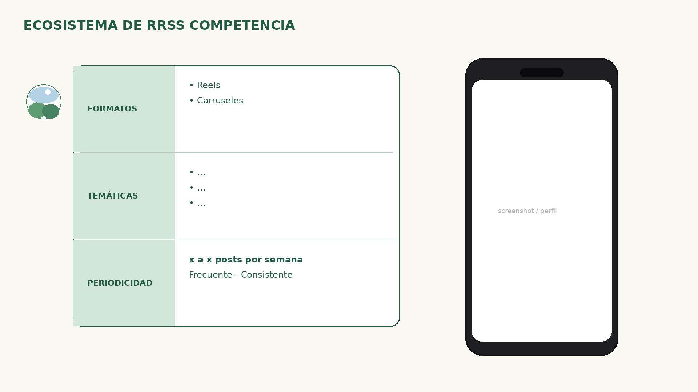

Rellenar formatos (Reels, carruseles…), temáticas observadas y periodicidad real (posts/semana). El mockup del teléfono recibe captura del perfil. Una lámina por competidor clave o una síntesis — según el brief.